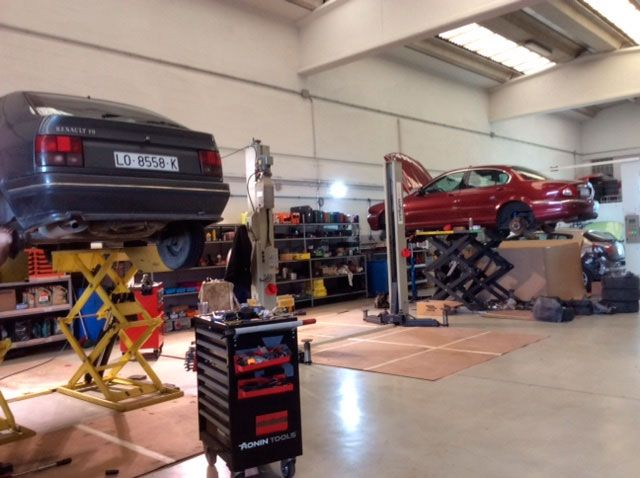
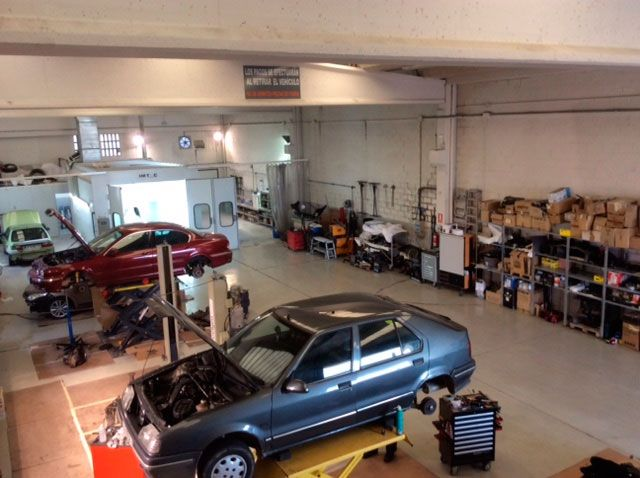
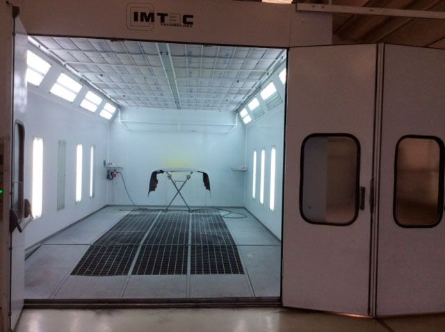
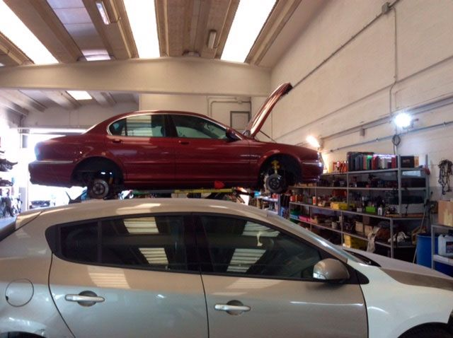
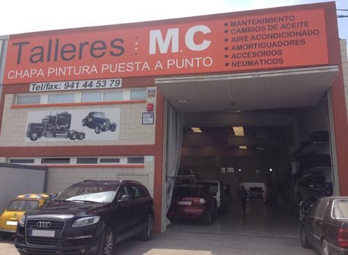

01 / QUIÉNES SOMOS
TU COCHE NO ES
UNO MÁS.
Detrás de cada avería hay alguien que necesita seguir con su día. En Talleres MC nos ocupamos de la mecánica, la carrocería y los detalles que hacen que un vehículo vuelva a estar a punto.
CUÉNTANOS QUÉ LE PASA
04
ÁREAS DE TRABAJO
UN MISMO TALLER
UN MISMO TALLER
02 / LO QUE HACEMOS
DEL RUIDO RARO
AL ÚLTIMO DETALLE.
Cuatro formas de ponerlo todo en orden. Elige una para ver en qué podemos ayudarte.

01 / MECÁNICA GENERAL
Revisiones, puesta a punto y reparación de averías. De los frenos al motor, miramos lo que necesita tu vehículo para que siga en marcha.
CONSULTAR ESTE SERVICIO03 / PUERTAS ADENTRO
ESTO SÍ ES
NUESTRO TALLER.
Ni fotos de catálogo ni decorado: así es el espacio de trabajo de Talleres MC en La Portalada.



TALLERES MC / LOGROÑO
CHAPA. MOTOR.
CHAPA. MOTOR.
Y MUCHO OFICIO.
Lo nuestro pasa dentro del taller. Lo importante es cómo sales de él.
04 / VEN A VERNOS
NOS VEMOS
EN LA PORTALADA.
Avenida Aragón, 30
Polígono La Portalada I
26006 Logroño, La Rioja
¿UN GOLPE?Descarga el parte de accidentes

MCAV. ARAGÓN 30
LOGROÑO
LOGROÑO
LA ENTRADA AL TALLER ↗